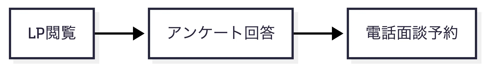
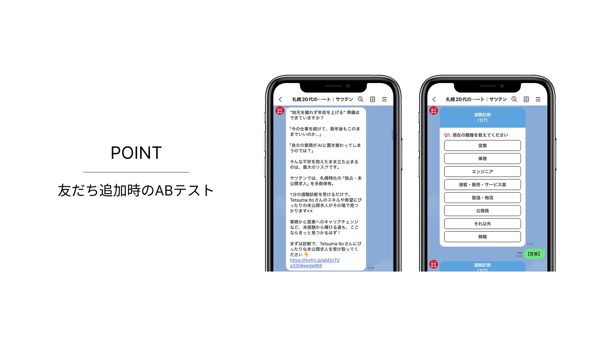
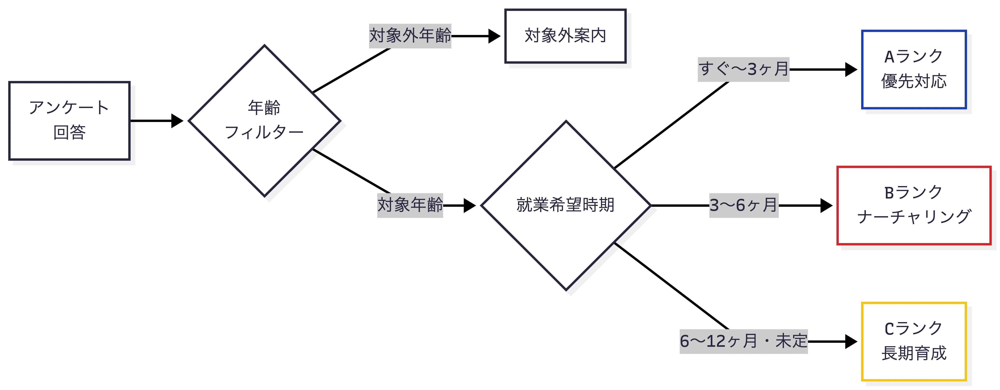

2026/4/22
「面談予約率わずか約10%」札幌の転職エージェントが、LINEで成約につながる導線を作り直した話

月約100名がLPから登録しているのに、実際に面談まで進むのはたった十数人。
メールを送っても開かれない。電話をかけても出ない。せっかく「転職したい」と思って登録してくれた求職者が、面談にすらたどり着かない。
これは、札幌で転職支援サービスを展開する企業が抱えていたリアルな課題です。
本記事では、この課題に対してLINE公式アカウントとLステップで構築した「成約に直結する自動導線」の全体像と、その設計思想を公開します。同じ課題を抱える人材紹介・転職支援事業者の方にこそ、読んでいただきたい内容です。
目次
クライアント情報｜札幌特化の転職エージェント「サツテン」
| 項目 | 内容 |
|---|---|
| クライアント | サツテン（株式会社EachWorth） |
| 事業内容 | 札幌エリアに特化した転職支援・人材紹介サービス |
| ターゲット | 北海道在住の20代（第二新卒〜キャリアチェンジ層） |
| 特徴 | 1,000社以上の提携企業／完全無料のキャリアコンサルティング／2023年創業 |
| 代表 | 若生 昌也 氏 |
| Web | satsuten.com |
「札幌特化でやっている会社が少ない。他社では相手にしてもらえないという声を、求職者から多く聞く」
地元で本気で向き合うというポジションで、独自性を築くエージェントです。
抱えていた課題｜集客はできている。でも、面談につながらない
LP広告からの月間流入は約100名。集客自体はうまくいっていました。しかし、友だち追加直後のアンケートには約7割が回答してくれるものの、その先の電話面談予約までつながるのは約1割程度。「入口までは来ているのに、その先でこぼれている」状態でした。

Lステップは導入済みでしたが、リッチメニューは未設定、ステップ配信もゼロ。「道具はあるのに、使えていない」状態です。
なぜ離脱するのか？ 構造的に見えた3つの理由
タイミングのズレ：メールや電話は、求職者が反応したいタイミングと合わない。登録直後の温度が高い瞬間を逃している。
次のステップが不明確：登録後に何をすればよいか分からず、放置されてしまう。
画一的な対応：転職意欲が高い人も、まだ情報収集段階の人も、同じフローに乗せてしまっている。
この3点こそが、「LINEを導入しているのに成果につながらない」多くの人材紹介会社が共通して抱える構造的な課題です。
解決の方針｜LINE内で登録から予約までを一気通貫に、温度感で自動振り分け
ヒアリングと課題分析の結果、設計の方向性が決まりました。
LINEの中で、登録から予約まで自動で完結する導線をつくる。しかも、一人ひとりの温度感に合わせて対応を変える。
単にLステップを「作る」のではなく、クライアントのビジネスモデルに噛み合う自動化導線を設計することにこだわりました。
実装した仕組み｜再現可能な5つの構成要素
1. 適職診断アンケート × A/Bテスト
友だち追加後、最初に触れるのが「適職診断アンケート」です。ここで2つの形式を並走させ、A/Bテストを初期段階から組み込みました。

| パターン | 取得情報 | 強み |
|---|---|---|
| チャットボット形式 | プロフィール項目 | 回答率が高い／心理的負担が少ない |
| フォーム形式 | プロフィール＋電話番号・氏名・メール | 後追いフォローがしやすい |
「回答率を優先するか、連絡先取得を優先するか」というジレンマに感覚で答えを出すのではなく、ローンチ時点でデータに基づいて判断できる状態を整えました。
2. 温度感スコアリング × 自動セグメント化
アンケートの回答内容から、見込み客のランクを自動で判定する仕組みを組み込みました。

就業希望時期でA（すぐ〜3ヶ月）／B（3〜6ヶ月）／C（6〜12ヶ月・未定）に自動分類
年齢フィルターでサービス対象外の層（19歳以下・35歳以上）は別動線へ案内
タグ付与とシナリオ分岐で、ランクごとに最適なメッセージを配信
全員に同じメッセージを送るのではなく、「今この人に必要な対応」を自動で振り分けます。結果として、コンサルタントの対応工数を温度感の高い層に集中でき、リソース最適配分という副次効果も生まれます。
3. 自然なカウンセリング予約導線
「予約しませんか？」と押し売りするのではなく、適職診断の結果として求人サンプルを提示し、興味を持った方が自然な流れで予約ページへたどり着ける導線を設計しました。
4. リマインダー × フォローアップシナリオ
予約後：前日・当日に自動リマインドを配信し、ノーショー（無断キャンセル）を防止
予約しなかった方：日をあけて再度カウンセリングの案内を配信するフォローアップを構築
一度接点を持った見込み客を、ナーチャリングで育てる仕組みをLINE内で完結させました。
5. 状態別に切り替わるリッチメニュー
アンケート回答前：「黒いメニュー」で回答を促す導線に集約
回答後：適職診断・カウンセリング予約・コンサルタント紹介・FAQ・チャット相談の5タブ構成に切り替え
まず回答してもらうことを最優先し、その後は受け皿として機能する動線を徹底しています。デザインはLPのトンマナに準拠し、LPからLINEへの遷移でブランド体験が分断されないよう配慮しました。
私たちの設計思想｜作って終わらない3つのこだわり
1. まず「数字を取る」ことを最優先
リッチなCSS装飾やデザインの作り込みは初期段階では意図的に省略。A/Bテストで意思決定に必要なデータを先に集め、効果が見えた箇所から磨き込むという検証ファーストの方針で合意しました。
2. 広告費を増やすのではなく、今の流入を取りこぼさない
月100名の流入がある中で、「もっと広告を回す」のではなく「今来ている100名をどれだけ面談につなげられるか」にフォーカス。集客コストを上げずに成果を上げる方向で設計しました。
3. 約1ヶ月でローンチ、改善サイクルを早く回す
| フェーズ | 期間 | 内容 |
|---|---|---|
| キックオフ・要件すり合わせ | Week 1 | 先方構成案の精査／スコープ確定 |
| 設計・ライティング | Week 2 | 動線フロー／訴求軸の言語化 |
| 実装 | Week 3 | Lステップ構築／リッチメニュー制作／シナリオ配信設定 |
| テスト・最終調整 | Week 4 | 実機テスト／デモ確認／本番リリース |
スピード感と品質のバランスを、週次のMTGによる合意形成で両立。早く形にすることで、運用データに基づく改善サイクルを早く回せる状態を目指しました。
目指している成果
本事例は施策紹介編です。実稼働後の成果数値は、今後本ページに随時追記していきます。
友だち追加から面談予約率を、現状の数倍規模へ
月間成約数を、これまでの数倍の水準へ引き上げ
追加後のナーチャリングを仕組み化し、熱量を逃さない運用体制へ
コンサルタントの対応工数を温度感の高い層に集中させ、生産性を向上
なぜNotreを選んでいただけたか
他社からも構築提案を受けている中で、競合案は弊社提案のおよそ倍の金額でした。それでもNotreを選んでいただいた理由は、以下の3点です。
事例に基づく具体的な設計提案：抽象的な施策列挙ではなく、KPIに紐づけた構築案
費用対効果：スコープを精査し、必要十分な範囲で投資回収できる構成に絞り込み
0→1で作り直すことへの理解：既存のLステップをそのまま活かすのではなく、ゼロベースで導線を再設計する提案
まとめ｜LINE構築は「作業」ではなく「設計」で決まる
LINEの構築代行は、リッチメニューを作ったりステップ配信を組んだりする「作業」だと思われがちです。
でも本当に成果を出すために大切なのは、「なぜその機能が必要なのか」「ユーザーはどこで離脱するのか」を先に考えること。
私たちNotreは、お客様の事業フローを深く理解した上で、成果から逆算した設計を大切にしています。
こんな課題を感じている企業様におすすめです
LINE公式アカウントは開設したものの、運用できずに放置状態
問い合わせ・友だち追加は入っているのに、商談・成約までつながらない
一度接点を持った見込み客を、ナーチャリングで育てる仕組みが欲しい
人材紹介・不動産・保険・士業など、面談を起点にしたビジネスを展開している
「LINEを導入しているが、活かしきれていない」企業様こそ、設計次第で大きく成果が変わります。
まずは無料でご相談ください
現状をヒアリングした上で、貴社に合った活用方法をご提案します。
無料相談を申し込む
類似事例の資料をダウンロード
LINEで問い合わせる
Pick up